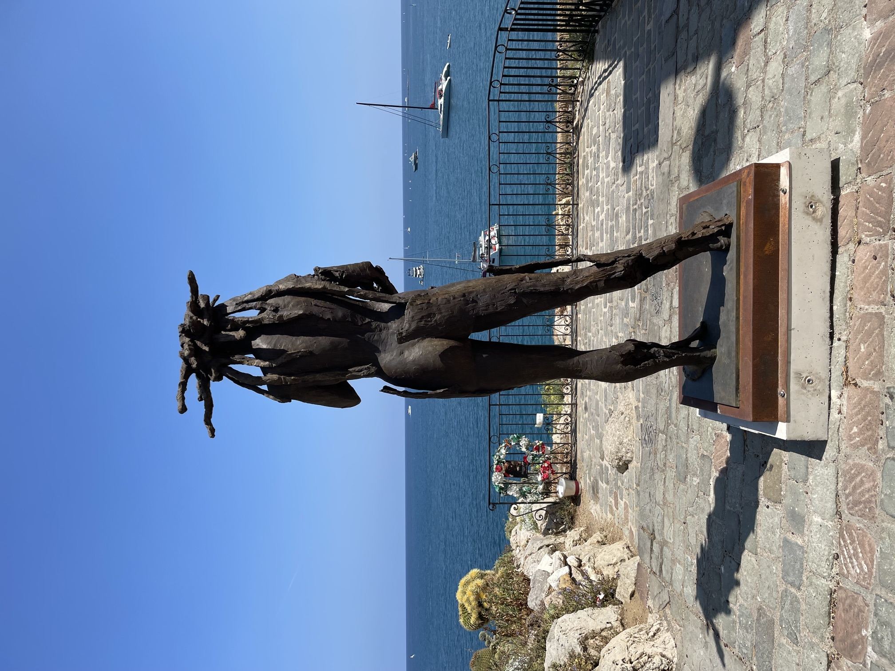

It has been beastly hot in Western Europe this summer and Antibes has not been spared with temperatures soaring to over 100 degrees Fahrenheit with hardly a breath of air and it is sometimes wiser to just leave it at the Celsius number so you don’t really know the exact amount of misery that awaits you on the other side of the door.
The market is in full swing with many merchants opening their stands on Monday from June through August, Monday being the usual day when there is no market. Simone, she who is always dressed to go clubbing in Cannes as opposed to her daughter who covers herself from head to toe no matter the temperature, has expanded her tomato stand to include juicy strawberries, sweet melons and zucchini flowers to only scratch the surface of the items of produce she sells making her amazing stand cause traffic jams during peak hours. Simone has also included three pages of handwritten rules admonishing the public pre-emptively stating rules for her stand that must be obeyed or else: no touching and no photos and if you do not obey you will be charged. The three page document in French and one page in perfect English goes on to explain that the magnificent produce is the product of hard work and long hours (mostly not hers) and is not simply a thing of beauty to be handled and photographed. Somehow I was able to take a photo at no charge that includes Simone.

At the far side of the market Michele continues to hold court with his extraordinary display of produce and Carlos’ La Sirene (The Mermaid) fish and shellfish are always tempting and why resist. Carlos also has a popular restaurant next to his lair run by his movie star handsome son with tables spilling out into the market space at lunch and dinner where reservations are a must and magnificent shellfish towers grace almost every table.
After the market closes the trucks appear to wash down the cement and remove the hundreds of empty crates discarded by the merchants along with rejected produce and whatever else happens to find its way to the ground intentionally or not. Terraces of the various restaurants that surround the market quickly appear getting ready for the many tourists and locals who want to be part of the vibe which continues late into the night with live music and dancing. During the World Cup restaurants set up screens and fans of the French team watched into the early hours hoping for victories that never came.
Some years ago, before Covid, a whole neighborhood of dilapidated buildings was demolished in order to build a mixed use complex; it is out of the way behind the popular cafes along the rue de la Republique and is accessed by a not very inviting sun-drenched plaza. There are, however, some gems that have come to be quite popular: the restaurant Ferni curiously named for Fernand Leger, is run by the family that has the famous Plage Keller and restaurant Cesar at La Garoupe beach and the place is always packed. The menu has it all from smash burgers to outstanding ceviche to decadent desserts and a reasonable wine list. The staff is friendly and the service excellent. Next door, however, is another story with a restaurant that is never full; the owners had a charming restaurant on a little side street that was always booked and somehow expanding to a modern setting has not gone well.
Another restaurant has recently opened in the complex that is quirky and fun if you do not have any appointments after lunch or like to go to bed really late. There is the chef and the waiter and too many tables for them to take care of in an efficient way and the waiter is such a character you feel as if you are part of an SNL skit. Even the menu is cheeky and one item, the deviled eggs, includes the description that they are very big. Sit down at the table next to yours to take your order and have a chat? Why not? Remember what you had the last time you were there and remind you that he had suggested that you have polenta and not the potatoes? Sure thing. The name of the restaurant, Les Canailles (the Rascals) says it all.
Sadly, the charming Art Deco primary school that was attached to the old post office was demolished to make way for the new complex. In its place was a Monoprix grocery store which was not a success and closed after two years. Replacing the Monoprix is a magnificent new bookstore which brought together some of the most popular stops for anyone visiting Antibes: books and comic strip figurines. A few years ago the bookstore Comic Strips Cafe (a misnomer as there was no cafe) moved its books to the bookstore in the new part of town across from the banks and kept the figurines in the location across from the old movie theatre. The bookstore landlord raised the rent and would not repair the leaks which threatened to damage the books so the bookstore found the perfect new home which could now include the figurines from Bandes Desinée (Comic Strips) giving TinTin and his crew and many others from earth and beyond a new home. The place is fabulous with art supplies, writing material and just about anything you would want in a poly-language bookstore with efficient and knowledgeable staff.


Next to the new bookstore is the now empty old post office which moved around the corner, hidden in a side street of the new complex. The old post office is supposed to become a four star hotel with a swimming pool on the roof but it is hard to imagine a glam hotel with bars on all the windows; as a landmark building nothing can be changed without more red tape than can be imagined. The Brutalist architecture is forbidding but one has high hopes for the future of this area even if it is taking too many years to get anywhere.
Every summer Antibes honors a sculptor by showing his/her works around town and this summer is no exception. My favorite was the animals that graced the town over a decade ago; what fun it was to go out one morning on my way to the market and find a bear in the square behind our house and then come across a lion when I took a different route home.
This summer the giant bronze works of Christophe Charbonnel, a former Disney studio modeler, are featured. Again, they appear one morning out of nowhere and make the daily morning foray to the market an additional delight. Charbonnel, whose exhibition is entitled Contemporary Mythology, is a student of ancient Greece and Greek mythology, making him a perfect choice as Antibes was originally settled by the Greeks over 2500 years ago. Among his ten pieces scattered around are three a mere steps from both our front and back doors: Poseidon, Dryade and Oros I. The artist takes delight in bringing art to the public so people do not have to go to a museum thereby making art accessible to everyone. His original love of comic strips led him to Greek mythology and the study of the human condition which led him to find a link between comic strips and classical art.

One of the latest trends here and everywhere is the rooftop called, in typical French fashion, “le Rooftop” and I suppose it is assumed that a “Rooftop” will include adult beverage service. Hotel du Cap Eden Roc built one a few years ago on top of the Eden Roc pavilion with weekly champagne nights featuring a different champagne house each time; the schedule is posted at the foot of the stairs leading to the terrace and only residents of the hotel may reserve. The elegant Maison de Bacon restaurant tore down the peaked roof making the unused space underneath it a very glam Rooftop which can be rented for private parties for up to 150 people; and now Antibes has one smack in the middle of town on the 6th floor of the new eight screen movie theatre. One of the main requirements for a Rooftop is a fabulous view and one suspects an expert barman; all three have the most magnificent view of the Mediterranean with a long and creative cocktail menu and all three are open nightly.

I love soap bubbles which our housekeeper, Nathalie, has noticed since it is impossible to miss the bubble machine and special soap in the kitchen. The hundreds (I am not exaggerating) who pass our house every evening both old and young are as amused as I to find soap bubbles descending on them as they stroll the now pedestrian ramparts. Nathalie surprised us one day with a flower soap bubble machine; soap bubbles are wonderful and bring joy to all who are lucky enough to walk past our house if there is not much wind. Our beloved neighbor Maita likes to come for cocktails and bubbles.

With Igloo long out of the picture having forsaken his fans in Antibes and beyond for his lady friend in Switzerland, there is an opening for a successor but so far no clear winner has emerged. There was a beautiful Siamese cat who lived around the corner and could have been a contender but she (or he) has moved on leaving the neighborhood void of an obvious mascot. This morning when I was leaving some books for a neighbor, a cat of no particular breed was napping in front of her door among the plants but did not seem to have any interest in making it to the finish line. I will keep looking and hope that I am not on a fool’s errand.